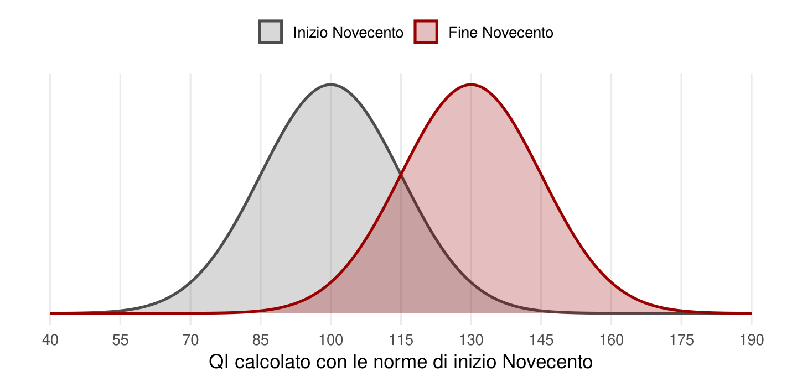
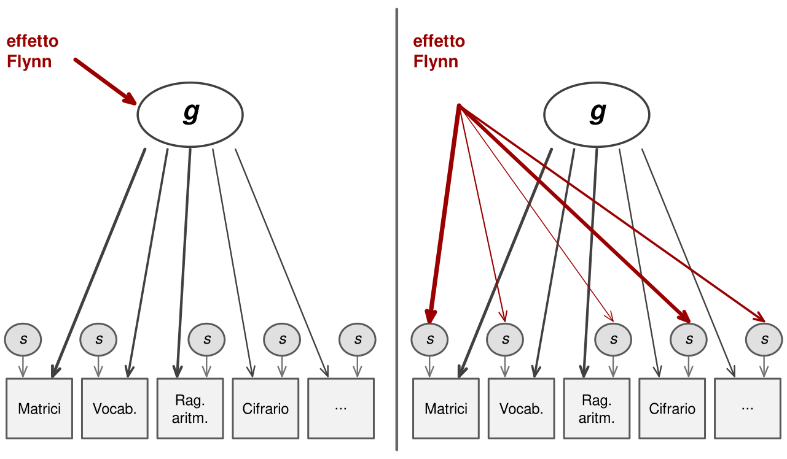
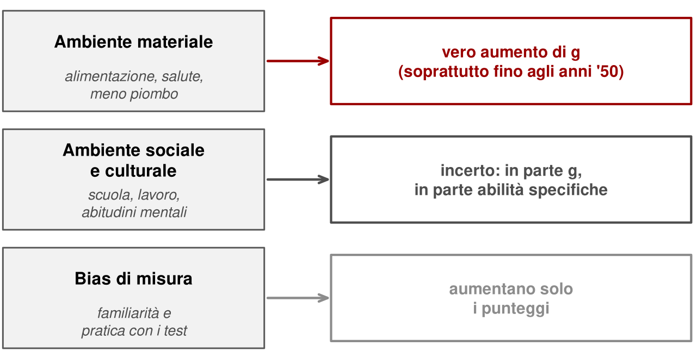

13 L’effetto Flynn e i cambiamenti storici
Le differenze di QI fra adulti sono in gran parte ereditabili. Già Galton ne era convinto, e gli studi sui gemelli lo hanno confermato. Ne segue che la capacità intellettiva è fissata nei geni? No. L’ereditabilità descrive le differenze in una certa società, in un certo momento storico. Ma la società e il momento storico possono cambiare. E possono cambiare moltissimo.
Il caso più spettacolare è quello che oggi porta il nome di James Flynn. Interessato al dibattito sulle differenze di QI fra gruppi, Flynn si accorse di un fatto che quasi tutti avevano trascurato: ogni volta che un test veniva ritarato su un nuovo campione, le persone ottenevano punteggi grezzi medi più alti di quelle della taratura precedente (Flynn, 1984). Il ritmo corrispondeva a circa tre punti di QI per decennio. In un secolo, trenta punti: due deviazioni standard.
13.1 Una crescita in tutto il mondo
Flynn mostrò che il fenomeno non era limitato agli Stati Uniti: lo stesso accadeva in molti paesi industrializzati, talvolta a ritmi ancora più elevati (Flynn, 1987). Una meta-analisi successiva, con dati raccolti fra il 1909 e il 2013 in decine di paesi, ha stimato un aumento medio globale di circa quattro punti di QI per decennio, con grandi differenze fra paesi ed epoche (Pietschnig & Voracek, 2015).
Che cosa significa, in concreto? Se valutassimo la popolazione di oggi con le norme di inizio Novecento, il QI medio sarebbe attorno a 130 (Figura 13.1). Viceversa, valutata con le norme di oggi, la persona media di inizio Novecento otterrebbe un punteggio attorno a 70, al confine con la disabilità intellettiva.
Il secondo numero fa capire perché la scoperta fu così sconvolgente. I nostri bisnonni non erano, in maggioranza, persone con una disabilità intellettiva. Lavoravano, gestivano famiglie e aziende, combattevano guerre, scrivevano libri. Eppure, per buona parte del Novecento, molti intellettuali dubitavano che le masse fossero capaci di svolgere ruoli cognitivamente complessi, e sostenevano l’istruzione di massa con scarsa convinzione (Flynn, 2020). L’effetto Flynn è anche la smentita di quel pessimismo.
13.2 Perché i punteggi sono cresciuti
La prima cosa da escludere è la genetica. La composizione genetica di una popolazione non cambia in modo apprezzabile in pochi decenni: l’effetto Flynn non è evoluzione. Le cause vanno cercate nell’ambiente, e conviene distinguerne tre famiglie.
La prima è l’ambiente materiale: alimentazione più ricca e varia, minori carenze nutrizionali, come quella di iodio, ridotta dall’introduzione del sale iodato; meno malattie infettive, grazie a igiene, vaccini e antibiotici; minore esposizione a neurotossine come il piombo. Questi fattori sono stati probabilmente decisivi nella prima metà del secolo, e rilevanti più a lungo per il piombo, eliminato da benzine e vernici solo negli ultimi decenni del Novecento.
La seconda è l’ambiente sociale e culturale: più anni di scuola per tutti, esposizione quotidiana a libri, giornali, radio e televisione, lavori sempre più cognitivamente impegnativi, famiglie più piccole, una vita quotidiana più complessa, varia e imprevedibile. Questi fattori sono rimasti attivi per tutto il secolo.
La terza sono i bias di misura: la crescente familiarità con il formato dei test, la pratica con prove simili. Questi aumentano i punteggi senza aumentare le capacità.
Flynn propose un’interpretazione suggestiva di come l’ambiente culturale abbia agito: cambiando le abitudini mentali (Flynn, 2020). Una persona di inizio Novecento, alla domanda su che cosa abbiano in comune un cane e un coniglio, poteva rispondere che il cane serve a cacciare il coniglio. Oggi si risponde che sono mammiferi. Davanti a un sillogismo con una premessa ipotetica, come «in questa regione non ci sono cammelli; questa città è in quella regione; ci sono cammelli in questa città?», la risposta poteva essere «non lo so, non ci sono mai stato». Il mondo di allora era ancorato all’utilità concreta delle cose. Il mondo di oggi abitua a classificare, astrarre, ragionare su ipotesi. Non a caso gli aumenti maggiori si osservano nelle prove come le matrici di Raven, che richiedono ragionamento ipotetico su stimoli astratti. Prove di intelligenza cristallizzata, come il vocabolario, sono cresciute di meno, nonostante l’enorme aumento della scolarità. L’effetto sembra riflettere più un cambiamento nel modo di ragionare che un effetto diretto dell’istruzione formale.
Nessuna spiegazione singola regge da sola. L’istruzione spiega male perché i guadagni siano maggiori nell’intelligenza fluida. La tecnologia non spiega perché la crescita sia iniziata prima della sua diffusione di massa, né perché si osservi anche in contesti rurali poco tecnologici. La familiarità con i test non spiega perché i guadagni siano cominciati prima che i test si diffondessero. L’alimentazione e la salute prevederebbero guadagni maggiori nei bambini, mentre spesso sono maggiori negli adulti (Pietschnig & Voracek, 2015). La Tabella 13.1 riassume le principali ipotesi e la difficoltà maggiore di ciascuna. Il quadro più plausibile è quello di molti fattori che agiscono insieme e si rinforzano a vicenda, con pesi diversi in epoche e paesi diversi.
| Fattore ipotizzato | Difficoltà principale |
|---|---|
| Più istruzione | non spiega perché i guadagni siano maggiori nell’intelligenza fluida che in quella cristallizzata |
| Esposizione alla tecnologia | gli aumenti iniziano prima della sua diffusione di massa e si osservano anche in contesti poco tecnologici |
| Famiglie meno numerose | non spiega l’appiattimento recente né guadagni maggiori negli adulti |
| Familiarità e pratica con i test | gli aumenti iniziano prima della diffusione di massa dei test |
| Mescolanza genetica fra popolazioni | può spiegare solo una quota piccola, pochi punti in cinquant’anni |
| Meno piombo nel sangue | gli aumenti iniziano prima degli anni Settanta, quando il piombo è stato eliminato |
| Alimentazione migliore | prevede guadagni maggiori nei bambini, non è ciò che si osserva |
| Meno patogeni | come per l’alimentazione |
| Amplificazione sociale (circoli virtuosi di piccoli guadagni) | spiega l’amplificazione, non l’effetto iniziale; plausibile, ma manca una prova empirica forte |
| Sviluppo cognitivo più lento e più lungo | promettente, ma è più una cornice teorica che una prova empirica |
L’effetto ha conseguenze anche per la ricerca. Negli studi trasversali sul declino cognitivo, gli anziani possono sembrare molto compromessi rispetto ai giovani in parte perché appartengono a coorti che hanno sempre avuto punteggi più bassi. L’effetto Flynn è anche un effetto di coorte.
13.3 Che cosa è aumentato davvero?
Il QI è un indicatore osservato di qualcosa che non si osserva. Se il QI medio aumenta, aumenta anche l’intelligenza? Non è scontato.
Il primo dubbio è quello dei bisnonni: un aumento di due deviazioni standard nella capacità reale è difficile da credere. Il secondo riguarda la genetica: se le differenze di intelligenza sono fortemente ereditabili e i geni non sono cambiati, può l’intelligenza essere cambiata? Sì, se si ricorda che l’espressione di una base genetica dipende dall’ambiente, come il rosa dei fenicotteri del capitolo sull’ereditabilità. No, se per intelligenza si intende solo il potenziale genetico.
Il terzo dubbio è il più serio. Gli aumenti sono molto disomogenei fra le prove: fortissimi nelle matrici e nelle prove di velocità, minori nel vocabolario, modesti nel ragionamento aritmetico. E le prove che meglio rappresentano il fattore generale non sono sempre quelle cresciute di più. Le analisi psicometriche mostrano che i guadagni fra coorti non rispettano l’invarianza di misura: le differenze fra generazioni non hanno la stessa struttura delle differenze fra individui della stessa generazione (Wicherts et al., 2004). Una lettura rigorosamente psicometrica suggerisce quindi che siano aumentate soprattutto abilità specifiche, più che g (te Nijenhuis & van der Flier, 2013).

Flynn arrivò a una posizione più sfumata. Se tutti i punteggi crescono, almeno un po’, qualcosa dell’intelligenza deve essere cresciuto davvero. Non siamo diventati tutti geni, ma in molte abilità importanti la persona media raggiunge oggi livelli che a inizio Novecento sembravano impensabili. E anche se l’aumento non riguardasse g, mostrerebbe un’enorme plasticità delle capacità cognitive umane in risposta all’ambiente: un risultato forse più importante di g stesso. Una sintesi ragionevole è che i miglioramenti dell’ambiente materiale abbiano prodotto un aumento reale della capacità generale, soprattutto fino alla metà del secolo; che quelli dell’ambiente culturale abbiano prodotto un misto di capacità generale e abilità specifiche; e che i bias di misura abbiano aumentato solo i punteggi.

13.4 La fine, e l’inversione
L’effetto Flynn non è finito ovunque. Nella maggior parte del mondo, dove salute, nutrizione e scolarizzazione stanno ancora migliorando, i punteggi continuano a crescere (Pietschnig & Voracek, 2015). Nei paesi occidentali, però, la crescita si è fermata e in alcuni casi si è invertita.
Il primo segnale è venuto dalla Norvegia, dove tutti i ragazzi venivano valutati alla visita di leva: i dati mostravano un rallentamento a partire dagli anni Settanta e poi i primi segni di declino (Sundet et al., 2004). Oggi un effetto Flynn inverso è documentato in diversi paesi del Nord Europa, come Norvegia, Danimarca e Finlandia, oltre che in Francia e in altri contesti, con cali che in alcune stime arrivano a diversi punti di QI dagli anni Novanta (Dutton et al., 2016). Dati statunitensi raccolti online su quasi quattrocentomila adulti fra il 2006 e il 2018 mostrano cali in alcune abilità, come le serie di lettere e numeri e il ragionamento con matrici, ma un aumento nella rotazione mentale tridimensionale (Dworak et al., 2023). Proprio perché riguarda item tra i più difficili, questo aumento rende poco plausibile che il calo dipenda solo da un minore impegno dei partecipanti.
Si è proposta anche una spiegazione genetica: in molte società le persone con QI più alto hanno in media meno figli, e questo produrrebbe un lento effetto «disgenico». L’associazione esiste, ma è debole e il suo effetto stimato è piccolo; inoltre agiva già durante il Novecento, quando era ampiamente compensata dall’effetto Flynn. Un’analisi decisiva è venuta ancora dalla Norvegia. Se il calo fosse dovuto a chi fa più figli, dovrebbe emergere fra famiglie diverse. Invece emerge dentro le famiglie: fratelli nati in anni successivi hanno in media QI più bassi dei loro fratelli maggiori, e il fenomeno non dipende dall’ordine di nascita (Bratsberg & Rogeberg, 2018). Sia l’effetto Flynn sia la sua inversione sono quindi di origine ambientale.
13.5 Perché scendiamo?
Le ipotesi sono numerose e quasi tutte da verificare. È probabile che si sia esaurita la spinta dei fattori che hanno fatto crescere i punteggi, e che ora emergano anche effetti contrari. Fra quelli materiali si citano la sedentarietà, la qualità della dieta, l’esposizione a nuovi inquinanti, la riduzione del sonno. Fra quelli culturali, scuole che chiedono meno memorizzazione e lettura approfondita, l’abitudine a delegare alla tecnologia ciò che prima si doveva ricordare, un’attenzione più frammentata. È possibile anche un problema di misura: alcuni test potrebbero essere invecchiati e non cogliere abilità oggi rilevanti.
Un indizio a favore di una spiegazione ambientale e culturale è che non tutte le abilità scendono allo stesso modo: nei dati statunitensi citati, serie di lettere e numeri e matrici calano mentre la rotazione mentale cresce (Dworak et al., 2023). Un declino biologico generale non produrrebbe andamenti così divergenti. Nello stesso periodo si osserva un calo nei punteggi delle indagini internazionali sulle competenze scolastiche e, in alcuni studi, nelle prove di ragionamento formale di tipo piagetiano proposte agli adolescenti (Shayer & Ginsburg, 2009).
La tentazione di attribuire tutto agli smartphone è forte. Va resistita, almeno nella forma monocausale. Le associazioni fra uso delle tecnologie digitali e benessere o cognizione negli adolescenti, nei grandi studi, sono in media piccole (Orben & Przybylski, 2019), e il calo dei punteggi è iniziato in alcuni paesi prima della loro diffusione. Lo stesso Flynn, negli ultimi scritti, prevedeva che il QI medio sarebbe diminuito se la società avesse ridotto le proprie richieste cognitive: meno lavori complessi, meno lettura, un’istruzione meno esigente (Flynn, 2020). È una previsione, non una spiegazione dimostrata. Ma ha il pregio di ricordare la lezione principale dell’effetto Flynn: l’intelligenza media di una popolazione dipende da ciò che quella popolazione chiede alle proprie menti.
Per una presentazione divulgativa dello stesso tema si veda anche la pagina L’effetto Flynn.